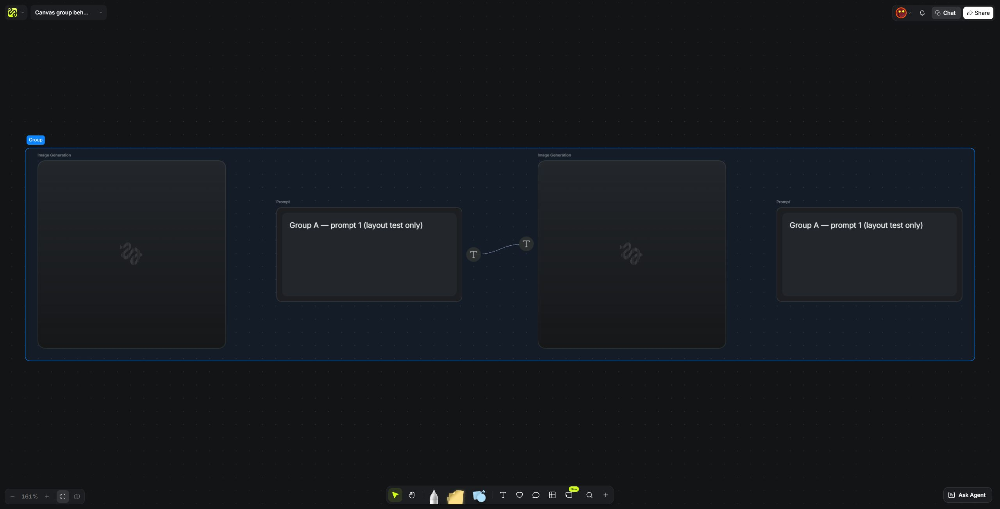
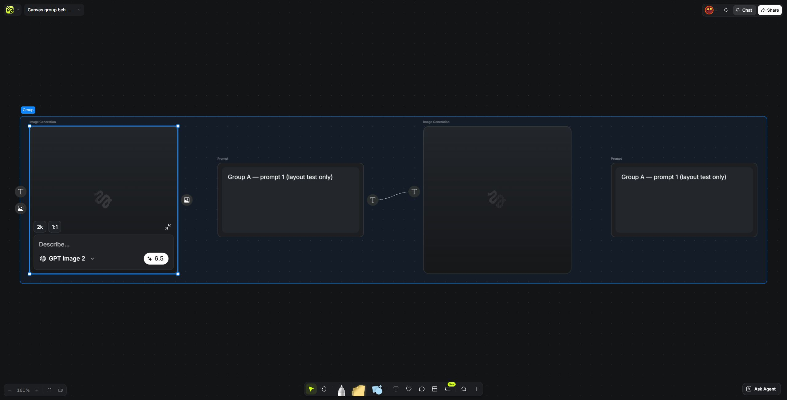
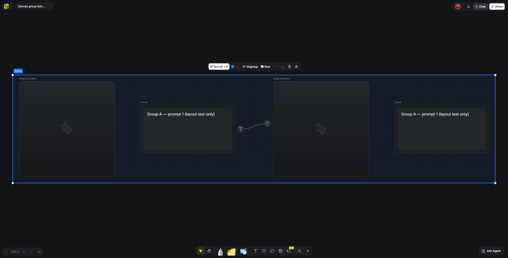
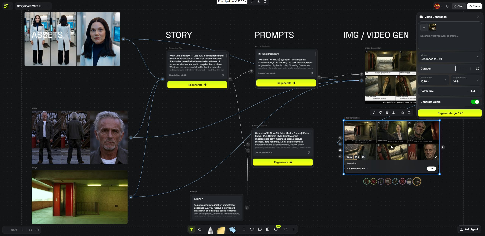
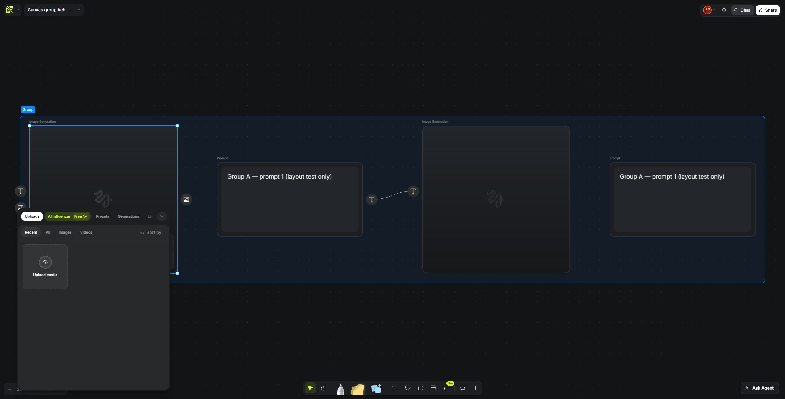
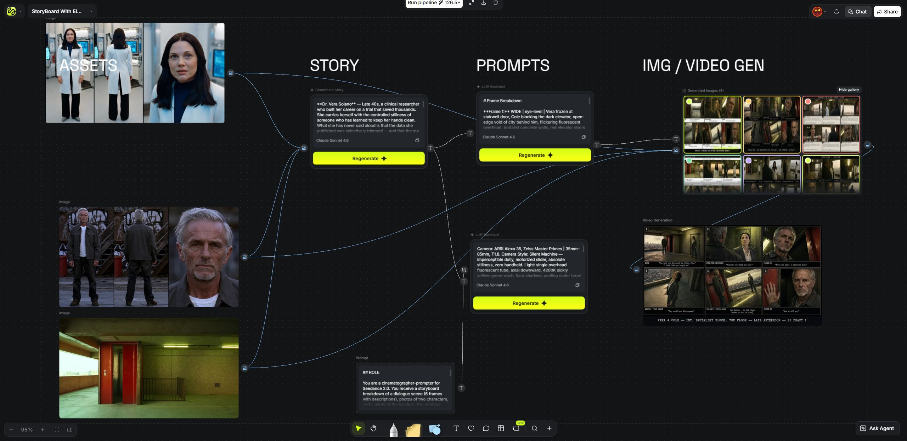

<!doctype html>
<html lang="zh"><meta charset="utf-8"><title>Higgsfield 六种状态实测截图</title><style>body{margin:0;padding:28px 36px;background:#111214;color:#f3f4f5;font:18px/1.5 'Microsoft YaHei',sans-serif}header{display:flex;justify-content:space-between;align-items:center;margin-bottom:24px}h1{font-size:26px;font-weight:500;margin:0}header span{font-size:15px;color:#aeb0b5}.grid{display:grid;grid-template-columns:repeat(3,1fr);gap:24px}figure{margin:0;background:#1d1f22;border:1px solid #35383d;border-radius:10px;overflow:hidden}figure img{display:block;width:100%;height:auto}figcaption{padding:13px 16px;font-size:17px}figcaption small{display:block;color:#b4b8bf;font-size:14px;margin-top:5px}footer{font-size:14px;color:#b4b8bf;margin-top:24px}</style><header><h1>Higgsfield Canvas · 六种实际界面</h1><span>2026-10-23 · Chrome 实测原始截图</span></header><main class="grid">
<figure><figcaption>01 未选择<small>左上标题 · 底部工具栏 · 默认没有设置面板</small></figcaption></figure>
<figure><figcaption>02 选中节点<small>提示词、模型、运行按钮在节点内部</small></figcaption></figure>
<figure><figcaption>03 选中组<small>运行、取消编组、排列、下载、删除、锁定</small></figcaption></figure>
<figure><figcaption>04 生成设置<small>参考 + 提示词 → 模型 → 时长 / 画质 / 画幅 → 生成</small></figcaption></figure>
<figure><figcaption>05 参考选择<small>输入端口 → 来源菜单 → 素材选择器</small></figcaption></figure>
<figure><figcaption>06 查看结果<small>节点历史缩略图 + 展开图库；Full view 未成功验证</small></figcaption></figure>
</main><footer>原图未经裁剪；右侧官方模板为测试副本。未运行生成。完整观察、功能边界与逐张原图见同目录 README.md。</footer></html>
